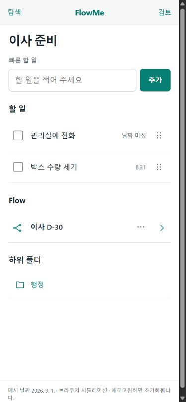
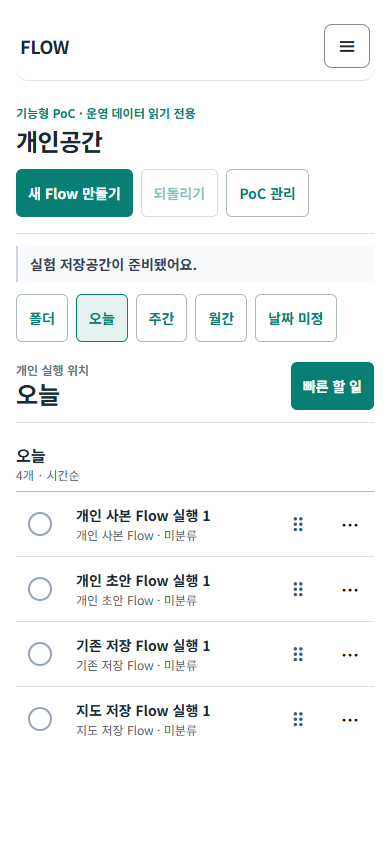
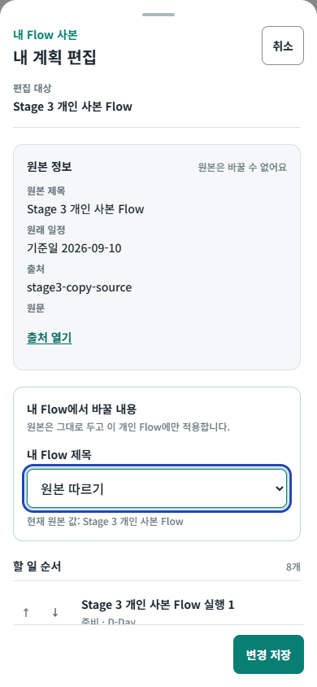
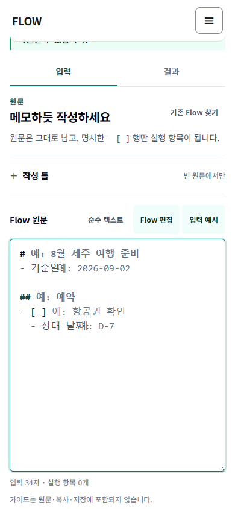

V4.1 · 개발 1 · 개발 2 / ATOMIC REQUIREMENT TRACE
세 결과물을 한 행씩
현재 PoC에 대조했습니다.
당시 대화와 결정 변경, 정본 화면과 기능 흐름을 원자 요구로 나눴습니다. 각 행에서 원출처, 기대 동작, 현재 구현·테스트 증거, 차이 원인과 다음 조치를 함께 볼 수 있습니다.
SOURCE COVERAGE
세 결과물을 동등하게 추적
통합 blueprint는 세 결과물 사이의 연결 규칙입니다. 별도 네 번째 제품 산출물로 세지 않습니다.
개인공간 v4.1
폴더·기간·QuickItem·이동·완료의 화면과 조작 문법
- 요구
- 0
- 1차 근거
- spec·HTML·QA
개발 1 기준 대화
네 origin, 공통 Plan/Item 편집, lifecycle·복구 owner
- 요구
- 0
- 대화
- 전체 페이지 확인
개발 2 기준 대화
일반 Text Authoring, 구조·결과·작성 틀, creator/personal 경계
- 요구
- 0
- 대화
- 159 turn 확인
통합 blueprint · 연결 계약
세 결과물의 저장 경계·identity·공통 시나리오를 대조하는 행입니다. 제품 결과물 수와 요구 개수에는 포함하지 않습니다. 연결 정본 열기
0개
정본 링크 범위상대 경로 링크는 저장소 구조 안에서 열립니다. 외부로 복사한 보고서에서는 요구 행의 출처 경로를 참고하세요.
METHOD
어떻게 정리하고 비교했는가
1. 원출처 보존
같은 뜻이 반복돼도 V41·D1·D2 행을 합치지 않습니다. 대체된 결정은 현재 결함이 아니라 변경 이력으로 남깁니다.
2. 관찰 조건 하나씩
부모 254행 중 복합 계약 77행은 386개 하위 관찰 조건으로 다시 나눠 각각 판정합니다.
3. 코드와 조작 증거 분리
구현 위치만 있으면 E1, 모델 테스트는 E2, 브라우저 조작은 E3, 회귀·build까지 묶이면 E4입니다.
충족부분미충족의도적 변경제외결정 필요
END-TO-END MAP
한 제품에서 이어져야 할 흐름
각 단계의 필터를 누르면 관련 요구만 볼 수 있습니다.
DATA OWNERSHIP
세 결과물이 만나는 저장 경계
작성 중 값과 개인 실행 값은 PoC에만 쓰고, 기존 Flow 원본과 운영 writer는 건드리지 않습니다.
네 saved-plan origin
운영 key의 원본 Flow를 읽기만 하고 savedCopyId+flowId+itemId로 투영합니다.
작성 초안
flow:poc:personal-workspace:v1:*draft에 원문·틀·폴더·Undo 이력만 저장합니다.
개인 실행 위치
폴더·날짜·순서·완료·QuickItem·Undo는 versioned PoC shadow state가 소유합니다.
운영 writer
기존 완료·메모·날짜·보관·export writer는 호출하지 않습니다. CreatorDraft와 실제 Calendar 연결은 결정 게이트입니다.
TRACEABILITY MATRIX
원자 요구사항 전체
현재 구현의 차이를 숨기지 않습니다. 결정 필요는 개발 누락이 아니라 운영 owner나 제품 정책을 먼저 정해야 하는 항목입니다.
DECISION CHANGE LEDGER
바뀐 결정과 아직 필요한 결정을 분리
대화 중 대체된 안은 현재 결함으로 세지 않습니다. 세 결과물의 충돌과 승인되지 않은 변경은 별도의 결정 행으로 남깁니다.
현재 결정 게이트·의도적 변경
SCREEN MATCHING
원래 화면과 현재 통합 화면
화면 유사성만으로 충족 판정을 내리지 않았습니다. 각 비교는 위 요구 행의 조작·저장 증거와 함께 봅니다.
V4.1 · 모바일 폴더


정보 위계와 평면 목록은 이어졌지만 글로벌 PlatformNav, PoC header, 기간 탭이 겹쳐 첫 항목이 더 늦게 시작합니다.
D1 · 공통 Item 편집


단계 3에서 네 saved-plan origin과 작성 handoff를 같은 Plan→Item editor, staged apply, receipt·retry·Undo에 연결했고 Chromium 13/13과 6개 viewport PNG 24개로 확인했습니다. 안정적인 section 제목 owner, 실제 /calendar·export·운영 lifecycle은 열지 않아 해당 부모 요구는 부분 또는 제외 경계를 유지합니다.
D2 · 작성 화면


React와 standalone은 한 편집기, 입력/결과 두 상태, 6개 작성 틀과 picker 예시, 전체 빈칸 ghost/toggle, 선택형 검토, browser-native Undo, stable 개인 Flow handoff를 같은 핵심 계약으로 사용합니다. 문맥형 line helper는 React 전용 P1 경계이며, CreatorDraft library와 공개 후보 owner도 이번 개인 handoff 범위 밖입니다.
PRODUCT BOUNDARIES
확정한 경계와 다시 여는 조건
D2 저장 대상
이번 PoC의 첫 성공 경로는 명시적인 개인 Flow handoff입니다. CreatorDraft library와 공개 후보는 별도 owner 승인 전까지 보류합니다.
D1 운영 editor·writer
편집·완료·휴지통 UX는 PoC shadow command로만 검증합니다. 실제 Calendar·export·lifecycle writer는 운영 owner 승인 뒤 adapter로 연결합니다.
통합 화면 token
운영 PlatformNav와 ink/cobalt를 전역 owner로 보존하고 teal은 exact-query 개인공간 accent로 한정합니다. 영구 token 통합은 별도 디자인 게이트입니다.
구조 수정 범위
일반 텍스트와 선택형 구조 검토를 기본으로 유지합니다. 지원 가능한 좁은 near-miss만 명시 correction 후보이며 자동 수정은 하지 않습니다.
독립 HTML 역할
embedded fixture 기반 오프라인 수동 검토 동반물입니다. React PoC 정본의 live origin·저장·실기 증거를 대신하지 않습니다.
Stage 5 고급 fidelity
recurrence runtime, public S3·version, table/source 양방향 update는 후속 보류 또는 이번 PoC 제외입니다. identity·권한·conflict·rollback owner 승인 때 각각 다시 엽니다.
운영 이관
identity·schema·migration·dual read·rollback 승인 전 PoC snapshot을 운영 저장소로 옮기지 않습니다.
현재 통합 판정핵심 연결을 조작할 수 있는 기능형 PoC이지만, 세 결과물 전체의 제품 통합은 완료되지 않았습니다. 자동 근거와 실제 기기·관찰 사용자 증거도 분리돼 있습니다.
EVIDENCE LEDGER
검증과 게시 상태
| 항목 | 상태 | 해석 |
|---|---|---|
| 요구사항 출처 감사 | 세 결과물 + 연결 계약 | 실제 대화·정본·화면·현재 코드 매칭. 연결 계약은 결과물 수에서 제외 |
| 추적 데이터 SHA-256 | | 요구·하위 판정·결정 이력·이번 수정의 현재 bytes로 다시 생성됐는지 확인 |
| 자동 테스트·build·브라우저 | ||
| 전체 npm 회귀 | ||
| 의존성 보안 감사 | 기능·회귀 검증과 분리한 기존 의존성 상태. 이 단계에서는 자동 수정하지 않음 | |
| 운영 데이터 불변 자동 증거 | ||
| 실제 Android Chrome | 사용자 제공 수정 전 사진과 자동 브라우저를 실기 완료로 대체하지 않음 | |
| 실제 iOS Safari | safe area·키보드·OS gesture 확인 필요 | |
| 관찰 사용자 | 발견·이해·회복·효용 미검증 | |
| commit / push / PR | 미진행 | 현재 격리 worktree의 로컬 변경 |
| Preview / Production | 미진행 | 배포 승인 없음 |